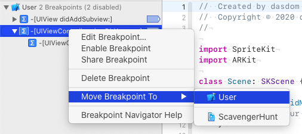

A breakpoint I cannot live without
I'm often working on projects from other devs. Some of the projects are quite complicated and I have difficulties to remember all the view controllers. Here is a breakpoint that helps me a lot when figuring out what's going on and where I need to fix a bug.
The breakpoint prints the class name of the current view controller to the console. It's a symbolic breakpoint on -[UIViewController viewDidAppear:] with the debugger command po $arg1.
To have the breakpoint in all projects, move it to the User. This can be done by Crl click on the breakpoint and selecting Move Breakpoint To / User.
Follow me on Twitter.
Check out my open source code at Github.